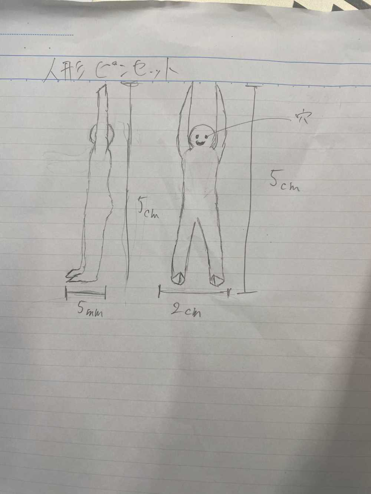
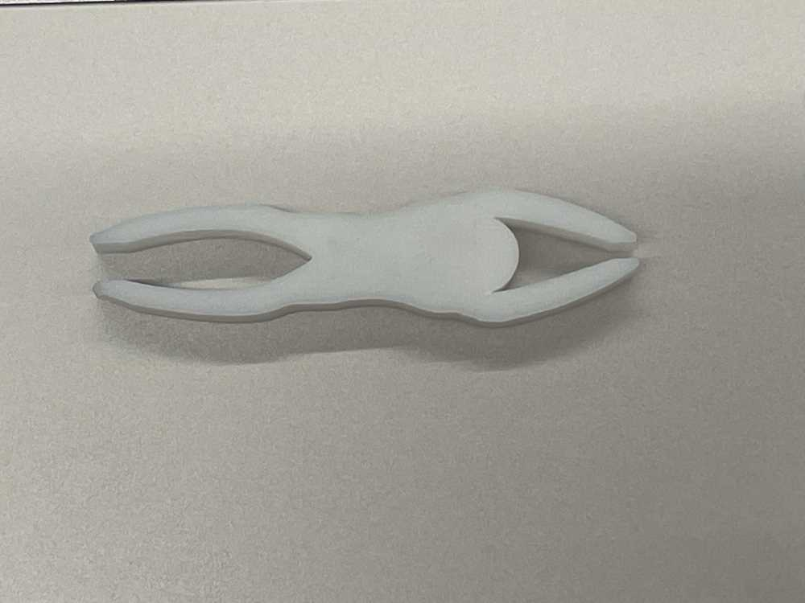
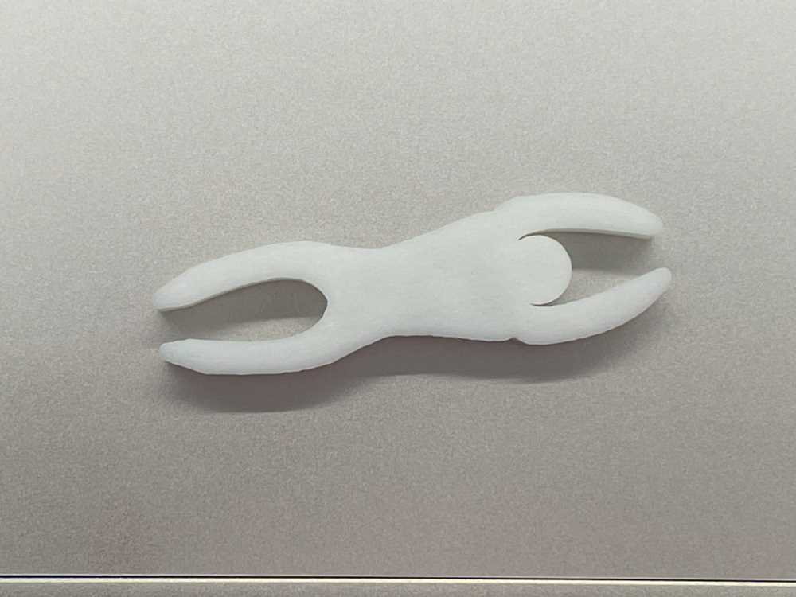

1. Human Pincet
2. 手書きスケッチ

3. 作品

4. 設計ファイル
こちらから見れます
5. 作品の説明
人型なので、腕と足の二か所がピンセットとしての機能を果たします。
6. この作品を作ろうと思った理由
サイズを指定された際に少し小さいと思い、それなら可愛いデザインがいいと考えました。そして、アイデアの発散workで出た中で、人型が一番かわいらしいデザインになるなと思ったからです。
7. 制作プロセスの中で調べたことの
メモや画像
１回目の試作品
腕と足の部分が太くて、閉じることができなかった
⇓
どのようにしたら閉じれるのか、グループのメンバーに聞きました。
そして、細くしたら閉じれるというアドバイスをもらいました。
⇓
２回目の作品
閉じれるようになりました